Adjustable CFGA continuous guidance-scale input, kept after distillation.
Selectable negative promptsChoose what to remove at runtime, in image and video.
One backbone pass per step4-step video (Wan2.1) and 8-step image (Qwen-Image).
Abstract
Few-step distillation reduces sampling cost but can weaken adjustable classifier-free guidance (CFG) and runtime negative prompting. PP-CFG keeps positive and negative text conditions separate, then combines their attention responses with opposite signs in one shared visual stream. Its Scale-Time Polarity Mixer adapts each condition to the CFG scale and denoising time. The student retains runtime CFG and negative-prompt inputs with one visual backbone pass per step. We evaluate DMD-distilled PP-CFG on Wan2.1 video and both LCM- and DMD-distilled variants on Qwen-Image. PP-CFG reaches 81.46 VBench Total in four steps, reduces teacher-student video distances relative to step-distilled DMD, and improves target removal over the corresponding teachers on NegElement-1K.
CFG After Distillation
Fixed-guidance distillation gives up the CFG knob, and adding CFG at inference to a distilled student tends to over-expose and lose detail. Each row is one model swept over CFG 1 to 9: the Wan2.1 teacher, three distilled baselines, and PP-CFG, which learns scale-dependent guidance inside the student.
CFG = 1CFG = 3CFG = 5CFG = 7CFG = 9
TeacherWan2.1-T2V-1.3B 50 steps
DCMdistilled baseline 4 steps
rCMdistilled baseline 4 steps
DMDdistilled baseline 4 steps
Ours (PP-CFG)CFG as input 4 steps
0.0 / 0.0 s
Prompt: A miniature sailing ship navigates across the surface of a steaming cup of coffee. Foam waves crash against its wooden hull while giant sugar crystals rise like icy mountains in the background. The camera begins with an extreme macro close-up and slowly orbits around the ship.
With CFG raised, Ours stays closer to the teacher than DMD does (FVD to the teacher, lower is better): 276 vs 387 at CFG 3, 373 vs 605 at CFG 7.
And with CFG on, it is still much faster than the teacher: an 81-frame video takes 15.0 s vs 280.7 s, and a 512×512 image 2.9 s vs 21.2 s (single GPU; 50-step teacher with CFG).
Negative-Prompt After Distillation
PP-CFG keeps the negative prompt as a runtime input: name an object and it is steered away. Green dashed boxes mark the object that replaces the target.
Image · Qwen-Image
Negative promptblack sunglassesObject Deletion
Teacher 8 steps
Ours 8 steps
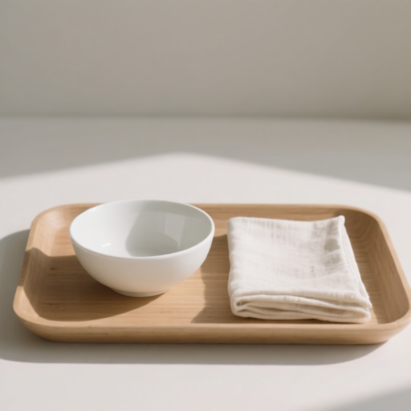
Positive prompt: A clean wooden table holding a white ceramic plate and a clear glass of water, with a pair of black sunglasses in the foreground near the white ceramic plate, realistic lighting, clean composition.
Negative promptfloor lampSemantic substitution
Teacher 8 steps
Ours 8 steps
Positive prompt: A modern bedroom with a neatly made bed and a wooden nightstand, with one floor lamp beside the wooden nightstand, realistic interior photography, balanced lighting.
Target removal at CFG 4: 12.08% Ours vs 7.35% teacher.
Video · Wan2.1
Negative promptblue umbrellaObject Deletion
Teacher 50 steps
Ours 4 steps
Positive prompt: A short static video shot of a neighborhood street corner with a brick building and a streetlight, with one blue umbrella near the streetlight, distant pedestrians moving softly in the background.
Negative promptpaper cupSemantic substitution
Teacher 50 steps
Ours 4 steps
Positive prompt: A short static video shot of a compact writing desk with a calendar and a white ceramic mug, with one paper cup in front of the calendar, subtle screen glow and a still camera.
Target removal at CFG 4: 22.00% Ours (4 steps) vs 10.20% teacher (50 steps).
Removal rate: share of NegElement-1K samples (1,000 cases, ten categories) that Qwen3.5-VL judges target-absent; failed judgments count as failures. It does not measure preservation or isolate the effect of the negative prompt, and the video comparison is not step-matched.
Method
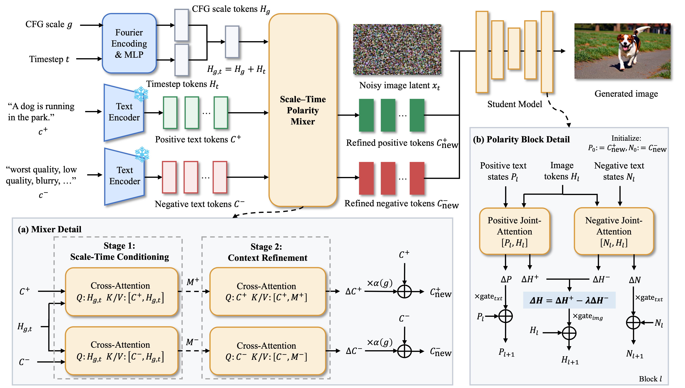
PP-CFG keeps the positive and negative text conditions separate and advances a single visual stream, so the student still needs only one visual backbone pass per step.
Scale-Time Polarity Mixer. Each text condition is refined on its own using the requested CFG scale g and the denoising time t, so a prompt's influence can change over the course of generation.
Polarity Blocks. Inside the backbone, the visual responses to the positive and negative prompts are combined with opposite signs before updating the shared visual state.
Works across backbones. Implemented for Wan cross-attention (video) and Qwen-Image joint attention (image), and trained with either LCM or DMD distillation.
Hg,t = Hg + Ht · ΔH = ΔH+ − λΔH−
More Results
Video · Wan2.1
Generated by PP-CFG on Wan2.1-T2V-1.3B with 4 sampling steps, at CFG 9.
Prompt: A humpback whale breaches out of a glassy turquoise sea at sunrise, water streaming off its body in slow motion, golden light catching the spray. The camera tracks upward alongside the whale. Photorealistic, cinematic, 8k.
Prompt: A glowing jellyfish the size of a building drifts through a rain-soaked neon city street at night, trailing soft light across wet asphalt and mirrored windows. The camera slowly dollies forward. Cyberpunk, volumetric fog, highly detailed.
Prompt: A paper boat sails down a rain-filled gutter that turns into a rushing river through a miniature city of cardboard houses. Raindrops explode into tiny crowns on the water. The camera follows at water level. Macro photography, whimsical, sharp focus.
Prompt: An astronaut walks across a red desert planet as a giant ringed planet rises over the horizon. Dust kicks up from each step and the visor reflects the glowing rings. The camera circles slowly around the astronaut. Epic science fiction, cinematic lighting, 8k.
Prompt: A snow leopard leaps between icy cliffs in a blizzard, powder bursting from its paws as it lands. The camera pans with the jump in a smooth slow-motion tracking shot. Wildlife documentary, ultra sharp, natural light.
Prompt: A vintage steam train crosses a stone viaduct high above an autumn forest, smoke curling into a pink-and-orange dawn sky. Leaves swirl in its wake. The camera sweeps in a wide aerial arc around the train. Cinematic, warm color grading, highly detailed.
Prompt: An enormous dandelion made of drifting stars blows apart in a night meadow, thousands of glowing seeds streaming upward into a sky full of constellations. A fox watches from the grass. Slow camera push-in, magical realism, soft bokeh.
Prompt: A small wooden cabin on a floating island drifts through golden clouds, with waterfalls pouring from the island's edge into the sky. Birds circle the cabin as the camera rises from below. Fantasy matte painting come to life, cinematic, 8k.
Image · Qwen-Image
Generated by PP-CFG (LCM) on Qwen-Image with 8 sampling steps, at CFG 5, 512×512.
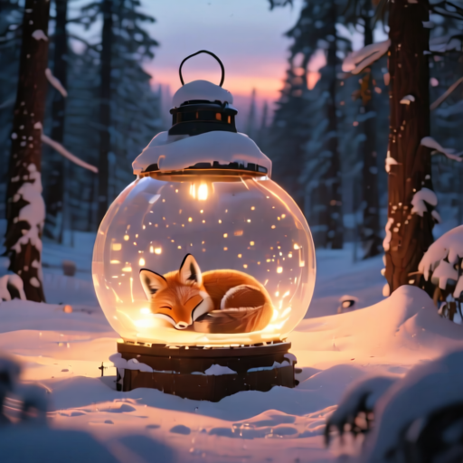
A fox curled up asleep inside a giant glowing lantern in a snowy pine forest at twilight, warm light spilling onto the snow, ultra detailed, cinematic.
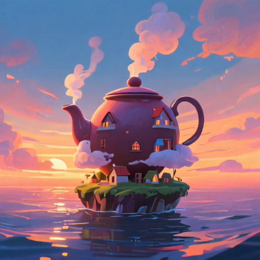
A teapot-shaped island floating above a calm ocean at sunset, tiny houses on its lid and steam rising as clouds, whimsical digital painting, rich colors.
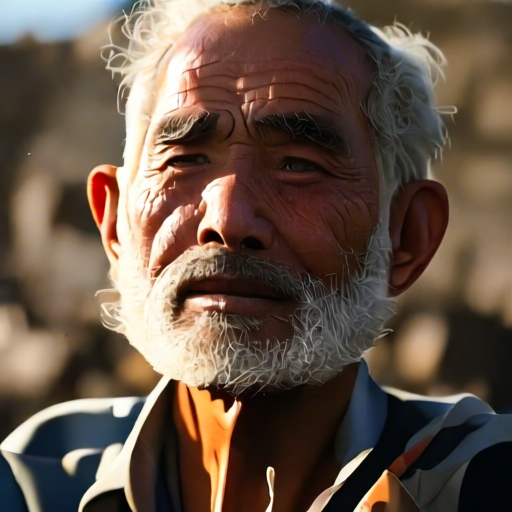
Close-up portrait of an elderly fisherman with deeply weathered skin, soft window light, shallow depth of field, photorealistic, 85mm.
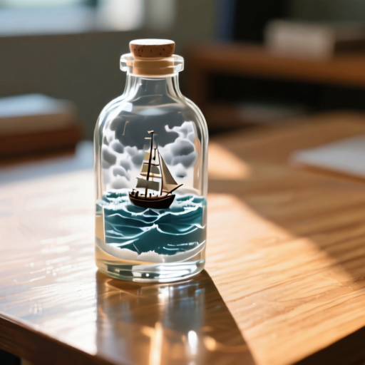
A crystal-clear glass bottle containing a tiny stormy ocean with a sailing ship, resting on a sunlit wooden desk, macro photography, sharp focus.
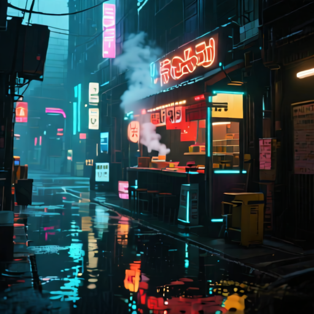
A neon-lit ramen stall on a rainy alley in a futuristic Tokyo, steam rising, reflections on the wet street, cinematic cyberpunk, highly detailed.
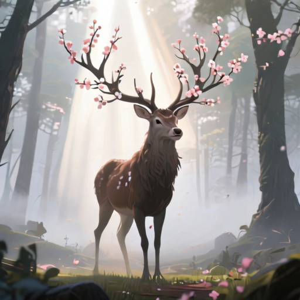
A majestic stag with antlers made of blooming cherry branches standing in a misty forest at dawn, soft god rays, fantasy illustration, ultra detailed.
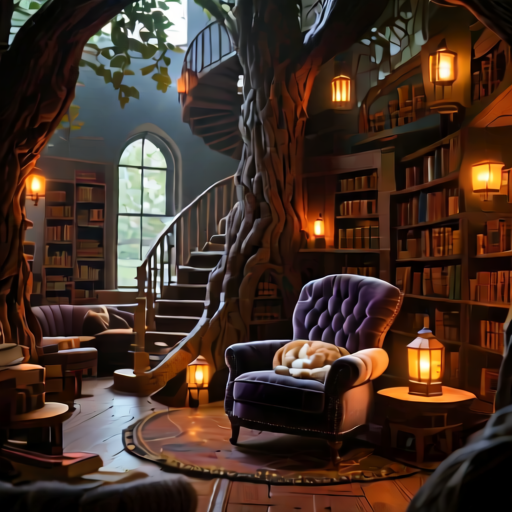
A cozy library inside a giant hollow tree, spiral staircases, glowing lanterns, a sleeping cat on a velvet armchair, warm lighting, highly detailed.
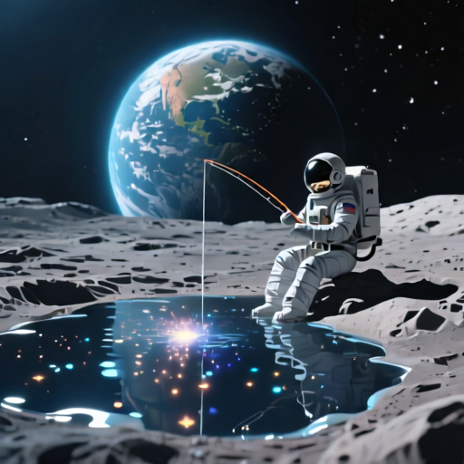
An astronaut sitting on the moon fishing in a pond of liquid starlight, Earth rising behind, whimsical surrealism, cinematic lighting.
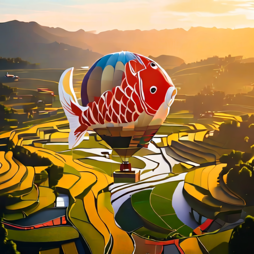
A hot-air balloon shaped like a koi fish drifting above terraced rice fields at golden hour, aerial view, vivid colors, photorealistic.A porcelain robot geisha pouring tea in a minimalist tatami room, cherry blossoms drifting through the open shoji door, soft light, hyperdetailed.
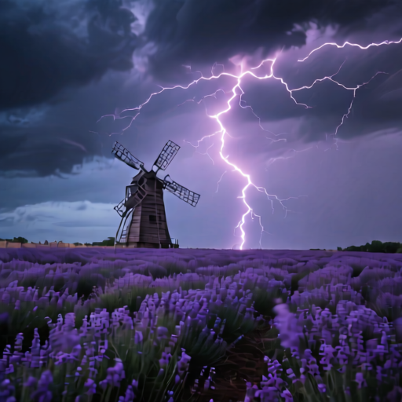
A thunderstorm over a lavender field, a lone wooden windmill lit by a single lightning bolt, dramatic sky, long exposure photography.
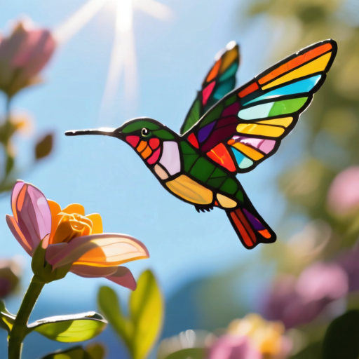
A hummingbird made of stained glass hovering at a flower, sunlight passing through its wings and casting colored light, macro, ultra sharp.